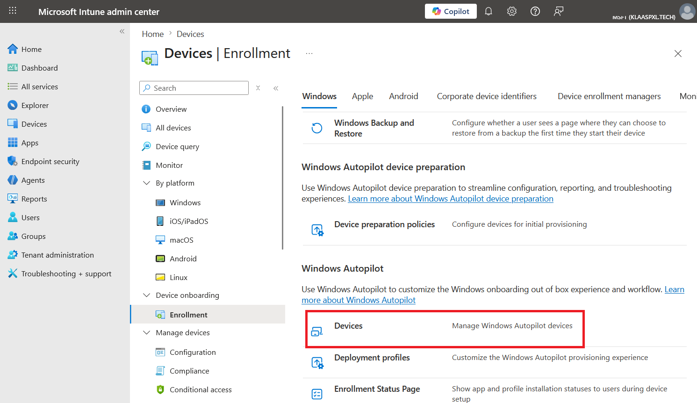
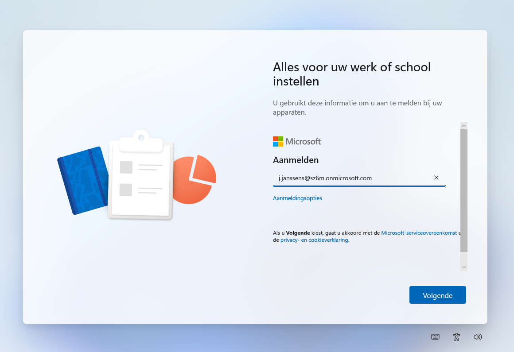

Een toestel inschrijven in Intune
Autopilot
Toestellen registreren in Intune houdt in dat je ze toevoegt aan Windows Autopilot. Autopilot koppelt elk toestel aan de Microsoft 365-tenant van je organisatie. Wanneer het toestel opnieuw geïnstalleerd of gereset wordt, verbindt het automatisch opnieuw en blijft het via Intune door de tenant beheerd.
Autopilot wordt gebruikt om:
- Toestellen te koppelen aan een Microsoft 365-tenant.
- De installatie en configuratie van toestellen tijdens de Out-of-Box Experience (OOBE) te automatiseren.
Windows OOBE (Out of Box Experience) is het initiële installatieproces dat gebruikers begeleidt bij het configureren van een nieuwe Windows-installatie, met instellingen zoals regio, account, netwerk en privacyvoorkeuren.
Een toestel toevoegen aan Windows Autopilot kan op twee manieren:
-
Via de toestelfabrikant: wanneer je Windows-toestellen aankoopt bij fabrikanten zoals HP, Dell of Lenovo, kan je de hardware hashes van die toestellen opvragen. Een hardware hash is een unieke identificator die de hardwareconfiguratie van een toestel voorstelt. Vóór de levering bezorgt de fabrikant een lijst met hardware hashes, die vervolgens in Intune Autopilot geïmporteerd kunnen worden.
-
Handmatig: je kan de hardware hash van een toestel ook zelf extraheren met een PowerShell-script en die vervolgens handmatig importeren in Intune Autopilot.
Deze handleiding beschrijft hoe je een virtuele Windows 11-machine als bedrijfseigendom (company-owned device) aan Intune toevoegt.
0. Voor je begint
Deze handleiding legt uit hoe je je virtuele machine "Windows 11 - lokaal account" registreert in Windows Autopilot door de hardware hash te verzamelen en te uploaden. Nadat de virtuele machine als Autopilot-toestel is geregistreerd, reset je ze en rond je de installatie af door aan te melden met een Microsoft Entra-gebruiker uit je Microsoft 365-tenant, waardoor het toestel in Intune wordt ingeschreven.
Je doorloopt de volgende stappen:
- De MDM user scope in Intune inschakelen
- Het PowerShell-script Get-WindowsAutopilotInfo installeren en de hardware hash extraheren.
- De hardware hash uploaden naar Intune.
- Het toestel resetten.
- Microsoft 365-aanmeldgegevens ingeven tijdens de OOBE
- De inschrijving van het toestel in Intune controleren
- Overige
Het uploaden van de hardware hash van een toestel schrijft het toestel niet in Intune in; het registreert het enkel in Windows Autopilot. Het toestel wordt later, tijdens de Autopilot OOBE-flow, in Intune ingeschreven nadat een gebruiker aanmeldt met Microsoft Entra-aanmeldgegevens. Windows OOBE (Out-Of-Box Experience) is het initiële installatieproces in Microsoft Windows dat gebruikers begeleidt bij het configureren van een nieuw toestel, zoals het kiezen van de taal, het aanmaken van een account en het instellen van voorkeuren.
1. MDM user scope
In een nieuwe Microsoft 365-tenant is automatische MDM-inschrijving voor gebruikers meestal niet ingeschakeld. Volg deze stappen om MDM-inschrijving voor alle gebruikers in te schakelen:
- Ga naar intune.microsoft.com en meld aan met een Global Administrator-account (
voornaam.achternaam@xxxx.onmicrosoft.com). - Selecteer in het linkermenu Devices.
- Selecteer onder Device onboarding Enrollment.
- Selecteer onder Enrollment options Automatic enrollment.
- Stel MDM user scope in op All en selecteer vervolgens Save.
2. Get-WindowsAutopilotInfo
Wanneer de installatie van Windows 11 voltooid is en je aangemeld bent:
- Open een elevated Terminal (uitvoeren als administrator)
- Voer de volgende commando's uit
Set-ExecutionPolicy -ExecutionPolicy RemoteSigned
Install-Script -Name Get-WindowsAutopilotInfo
Get-WindowsAutopilotInfo.ps1 -OutputFile C:\AutopilotHWID.csv
De onderstaande schermafbeelding toont de uitvoering van bovenstaande commando's

- Kopieer AutopilotHWID.csv
Het PowerShell-script Get-WindowsAutopilotInfo maakt in C:\ een bestand AutopilotHWID.csv aan met de hardware hash van je virtuele machine. Kopieer dit CSV-bestand naar je hostmachine. (Zorg dat VMware Tools geïnstalleerd is, zodat kopiëren en plakken werkt.)
3. Intune - Hash uploaden
- Ga naar intune.microsoft.com.
- Selecteer in het linkermenu Devices.
- Selecteer onder Device onboarding Enrollment.
- Selecteer onder Windows Autopilot Devices.

- Klik in Windows Autopilot devices in het bovenste menu op Import en upload je bestand AutopilotHWID.csv.
- De virtuele machine wordt dan geregistreerd als Autopilot-toestel.
- Dit proces kan enkele minuten duren. Je kan de importstatus volgen in het meldingsgebied.
4. Toestel resetten
Wanneer de importstatus van je Autopilot-toestel Ready is, reset je je virtuele Windows 11-machine naar de fabrieksinstellingen met de volgende stappen:
- Open File Explorer op je virtuele Windows 11-machine.
- Navigeer naar de volgende map:
C:\Windows\System32\Sysprep - Voer sysprep.exe uit.
- Klik op OK in het pop-upvenster dat verschijnt.
Na enkele seconden/minuten herstart je toestel en komt het in de Windows 11 OOBE terecht.
5. Microsoft 365-aanmeldgegevens tijdens de OOBE
Geef de Microsoft 365-aanmeldgegevens in van de gebruiker Jan Janssens die je tijdens de Entra-labo's hebt aangemaakt.

Beantwoord alle vragen in de Windows OOBE om de Windows-installatie af te ronden.
6. Intune-inschrijving controleren
Zodra de Windows-installatie voltooid is:
- Ga naar intune.microsoft.com en meld aan met je Global Administrator-account (
voornaam.achternaam@xxxx.onmicrosoft.com). - Selecteer in het linkermenu Devices en selecteer vervolgens All devices.
Je ziet nu een overzicht van alle toestellen die in je Microsoft 365-tenant zijn ingeschreven.

Het kan enkele minuten duren voordat alle velden (zoals Compliance en OS version) zijn ingevuld. Deze informatie wordt vanaf je virtuele Windows 11-machine met de Microsoft 365-tenant gesynchroniseerd.
7. Overige
7.1. VMware Tools
Omdat je je virtuele Windows-machine hebt gereset nadat je het PowerShell-script Get-WindowsAutopilotInfo had uitgevoerd, werd je Windows 11-omgeving volledig gereset en werd ook VMware Tools verwijderd. Wil je functies zoals kopiëren en plakken tussen je host en de virtuele machine opnieuw gebruiken en de schermresolutie verbeteren, dan moet je VMware Tools opnieuw installeren in je virtuele Windows 11-machine.
7.2. Slaapstand uitschakelen
Je virtuele Windows 11-machine synchroniseert gegevens zoals toestelinformatie, policies en applicaties. Wanneer de VM in slaapstand gaat (wat standaard al na enkele minuten gebeurt), wordt deze synchronisatie onderbroken. Pas de volgende Windows-instelling op je virtuele machine aan om de slaapstand uit te schakelen:
- Open Windows Settings
- Kies in het linkermenu System en kies vervolgens Power
- Configureer de Screen and sleep timeouts als volgt
- Turn my screen off after: Never
- Make my device sleep after: Never